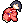
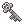

游戏剧情
大肆兴起的日落归仪式、神秘失踪的人们，这两者之间究竟有何联系？为了寻找失踪的好友，少女独自踏上了异世的旅程……
人物介绍
无恐怖/微恐怖模式自由切换 ★ 注 ★
游戏中包含无恐怖模式和微恐怖模式可供选择。（可在游戏开始时选择模式，或者游戏进行中在烛台上选择游戏模式！）微恐怖模式包含少量"震你一下"元素，对这类元素较敏感的同学请酌情选择模式！
可跳过追逐战功能 ★ 注 ★
跳过追逐战特色功能：大部分追逐战都可以选择跳过，在无恐怖模式下可以直接选择跳过追逐战。微恐怖模式下死亡5次后可选择跳过追逐战！
两种模式存档点选择 ★ 注 ★
萌物存档点：该模式下存档点为一个会吐槽的小骷髅？，并且可以无限制地进行存档。
记录册存档点：该模式下存档点为古旧的记录册，每层都有许多个，但是每次存档后其都会冒出奇怪的火焰，直到火焰消失才可再次在同一本记录册进行存档！
部分道具说明
| 巧克力 |
美味的巧克力，可以恢复部分HP |
日式人偶 |
即使没能在占卜屋获得也没关系的普通道具 |
符纸 |
会封印术的人可以利用符纸短暂封印灵体 |
| 符石 |
神奇的灵石，能在持有者危机时恢复其全部HP |
钥匙 |
只有持有即可打开对应的锁。 |
文献 |
记录着前人调查后留下的线索 |
关于隐世！？？
世界上总会有一些用科学无法解释的东西，譬如灵魂，又譬如我接下来要说的隐世。据一些早期的资料记载，有人曾经通过各种机缘，到达过一些和现今世界不一样的世界，有人曾经使用名叫“隐世降”的仪式而成功进入到了另一个完全不一样的世界。然而最近流传的“日落归”仪式竟然真的能将人带入隐世！不过可以发现，这个隐世并不安定，里面似乎处处都是陷阱、危险，根据存活下来的人所说在那里有两类“灵”，一类是发着红色光的，另一类是发着蓝色光的。红色光的灵似乎带有极强烈的攻击性，被他们发觉就会被他们所攻击；而蓝色光的灵较为温和，也有少量热心的存在。大部分人都称自己是被一白发女子触碰后昏倒，醒来就在之前进行仪式的地方了…………